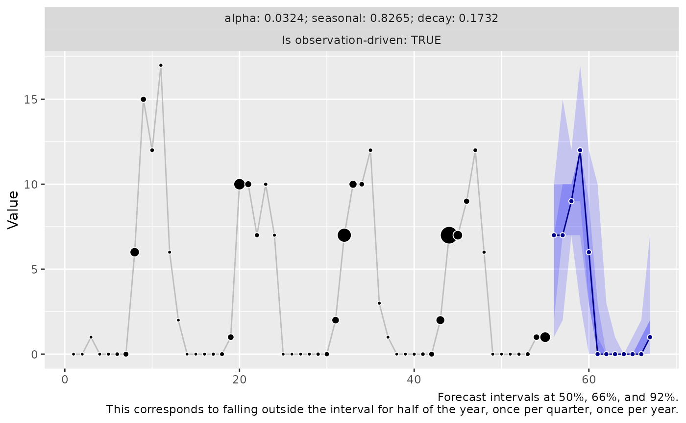
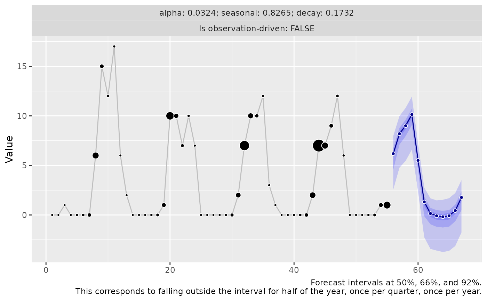
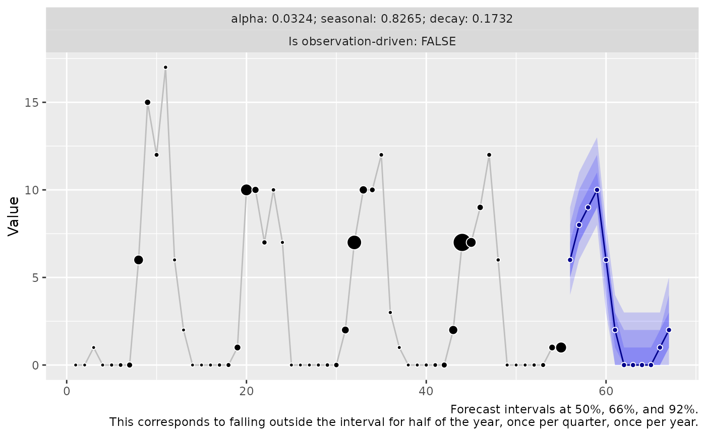

Draw forecast sample paths from a fitted 3DX model
Usage
# S3 method for threedx
predict(
object,
horizon,
n_samples,
observation_driven,
innovation_function,
postprocess = identity,
...
)Arguments
- object
A fitted model object of class
threedx- horizon
An integer defining the forecast horizon
- n_samples
An integer defining the number of sample paths to draw
- observation_driven
Logical; if
TRUE, sample paths are generated by drawing from weighted historical observations directly instead of adding innovation noise on the current mean forecast. This is similar to the Non-Parametric Time Series forecaster (NPTS) described in "GluonTS: Probabilistic Time Series Models in Python" (2019) by Flunkert et al. (see https://arxiv.org/abs/1906.05264). IfFALSE, sample paths will be generated by adding innovation noise on top of the current weighted average forecast.- innovation_function
A function with arguments
nanderrors. Must be able to handle additional parameters via...to allow for potential future changes in the set of arguments passed toinnovation_functionbypredict.threedx(). For examples, seedraw_normal_with_drift()ordraw_bootstrap_weighted(). The providedinnovation_functionmust return a numeric vector of lengthnthat contains i.i.d samples that can be used for any sample path and forecast horizon. This argument is ignored whenobservation_driven=TRUE.- postprocess
A function that is applied on a numeric matrix of drawn samples for a single step-ahead before the samples are used to update the state of the model, and before outliers are removed (if applicable). By default equal to
identity(), but could also be something likefunction(x) pmax(x, 0)to enforce a lower bound of 0, or any other transformation of interest that returns a numeric matrix of same dimensions as those of the input. Note that this can cause arbitrary errors caused by the author of the function provided topostprocess.- ...
Additional arguments passed to
innovation_function
Examples
set.seed(9284)
y <- stats::rpois(n = 55, lambda = pmax(0.1, 1 + 10 * sinpi((5 + 1:55 )/ 6)))
model <- learn_weights(
y = y,
alphas_grid = list_sampled_alphas(
n_target = 1000L,
include_edge_cases = TRUE
),
period_length = 12L,
loss_function = loss_mae
)
forecast_observation_driven <- predict(
object = model,
horizon = 12L,
n_samples = 2500L,
observation_driven = TRUE
)
if (require("ggplot2")) {
autoplot(forecast_observation_driven)
}

forecast_latent <- predict(
object = model,
horizon = 12L,
n_samples = 2500L,
observation_driven = FALSE,
innovation_function = draw_bootstrap
)
if (require("ggplot2")) {
autoplot(forecast_latent)
}

forecast_latent_with_postprocessing <- predict(
object = model,
horizon = 12L,
n_samples = 2500L,
observation_driven = FALSE,
innovation_function = draw_normal_with_zero_mean,
postprocess = function(x) round(pmax(x, 0))
)
if (require("ggplot2")) {
autoplot(forecast_latent_with_postprocessing)
}
